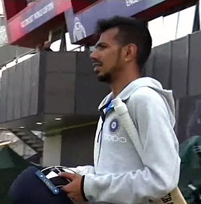
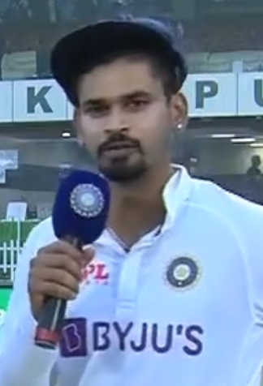

Ashwin has taken more than 495 wickets in tests and is the fastest bowler to reach 300 wickets in terms of number of innings. He has won ten Man of the Series awards in tests, which is the highest by an Indian cricketer and the second most. As an all-rounder in test cricket, he bats down the order, has scored five test centuries and is one of the only three players to have scored 3000 runs and taken 450 wickets in tests. As of January 2024, Ashwin is the highest-ranked bowler in the ICC men's player rankings and the highest rated Indian bowler ever in tests.

Bumrah was 14 years old when he approached his mom with the request to become a cricketer. Initially surprised by Bumrah's request and saying no, Daljit later relented when Bumrah convinced her. She then asked Kishore Trivedi, father of former Gujarat and Rajasthan Royals fast bowler Siddharth Trivedi, to enroll Bumrah in his academy. This marked the beginning of Bumrah’s cricket journey.[7][11]

He did his primary schooling from St Joseph's Boys' High School, Pune in Khadki. He studied in Lakashmibai Nadgude school in Pimple Nilakh, Pune. He did college studies from Marathvada Mitra Mandal's Polytechnic.[10]

Yuzvendra Chahal (born 23 July 1990) is an Indian international cricketer who plays for the Indian cricket team in white ball cricket as a leg spin bowler. He also currently plays for Haryana in domestic cricket and Rajasthan Royals in the Indian Premier League. He is a Right-arm leg break bowler. Chahal was the second player and first Indian to take a 6 wicket haul in T20I history.[2] He was the first concussion substitute to be named man of the match in an international cricket match.[3] He is a former chess player and represented India internationally in chess.
In December 2022 he scored 210 runs in 131 balls in a One Day International (ODI) match against Bangladesh, becoming the youngest cricketer to score an ODI double century and the first to convert a maiden ODI century to a double century.[2]

He made headlines when Delhi Daredevils bought him at the 2015 IPL auction for Rs 2.6 crore (about US$416,000). It was faith he repaid with interest: he made 439 runs that season, and won the IPL Emerging Player of the Year award. Over the next six seasons, he became a mainstay of the side and its captain, making over 400 runs a season for them four times.[4]
